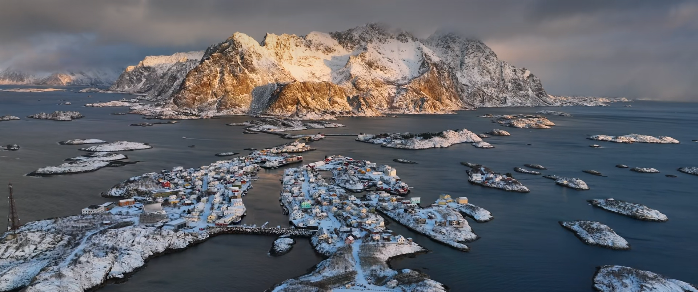
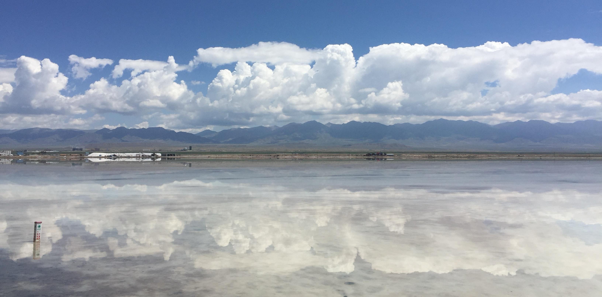
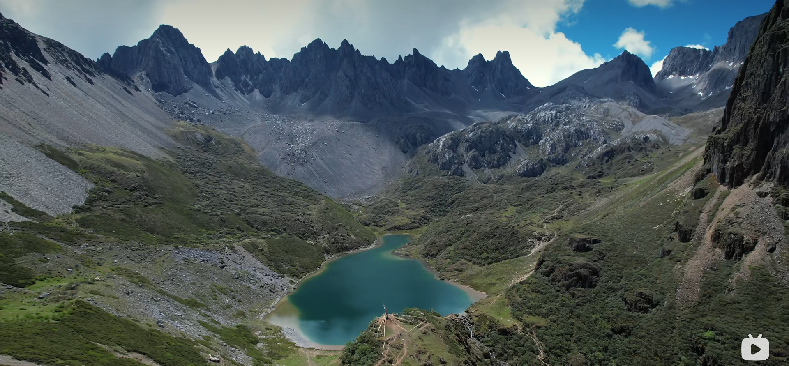
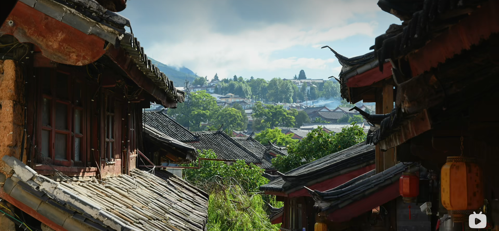
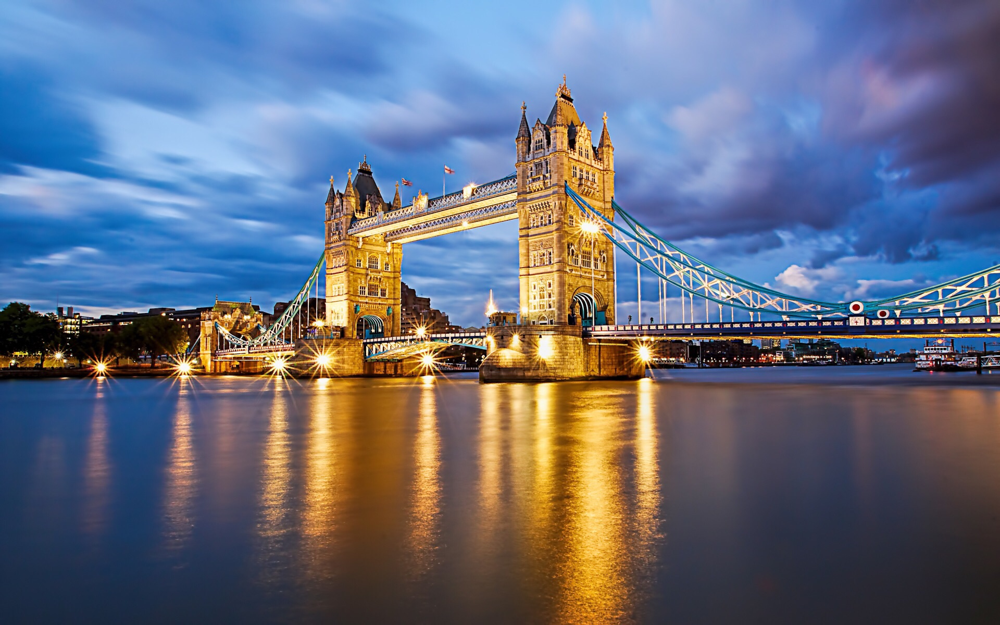

Home
CITY
USTINIAN
NATURE
NORWEI
YUNNAN
QINGGAN
    
——为何远行 ?渴望战栗。
重要的是去 ,而非去何处。
一个人,无论多么新鲜的生命,如果在一个生存点上搁置太久就会褪色、发馊、变质。感情就会疲倦,思想和呼吸即遭到压迫,反迟钝,目光呆滞,想象力如衰草般一天天矮下去......法国诗人阿兰说:“对于忧郁者,我只有一句话,向远处看。如果眼睛自由了,头脑便是自由的。陈旧的生活总是令人厌恶和恐惧,只有陌生才会激起生命的亢奋与战栗。所以,一个诗人首先是一个“在路上”的行者,他总是将梦想盲目而执拗地撒向远方...... 重要的是去,而非去何处。
渴望换种新的活法。渴望地理的改变能唤醒内心死去的东西。渴场一场烂漫的邂逅。渴望抚摸一棵叫不上名字的树......渴望渴了能遇见一条清洁的河。
摘自王开岭的《远行笔记（四章）》
白日梦想家
说来也怪,我们人类似乎天生就被赋予了探索的使命,想要
去更高的山峰、更深的海底，见证更多的奇观，探索生命的奥义。
然而山河湖海自然奇观，百年千年都不会有变化————
但只有当你站在那里的时候，才会给景色赋予属于你的意义
开拓视野，冲破艰险，洞悉所有，贴近生活，
寻找真爱，感受彼此。这就是人生的目的。
一定要去看看世界。
CLICK HERE TO REACH THE MOVIE